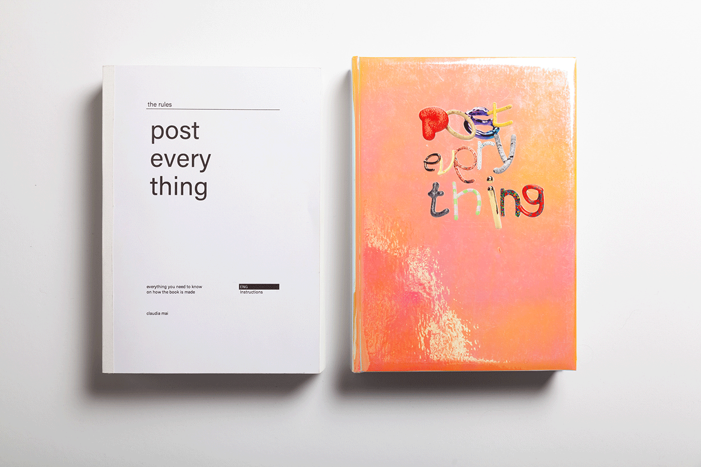

Claudia Mai
CLAUDIA MAI
Projekte, Lehre, Tools.
Lehrkonzept
Lehrprojekte
Denkraum
Linkarchiv

Portfolio
Projekte, Lehre, Tools.
Postdigital
Experimentelle Gegenfassung.
Portfolio
Postdigital
Lehrkonzept
Lehrprojekte
Tool Gallery
Denkraum
Linkarchiv
Portfolio
Postdigital
Lehrkonzept
Ausgewählte Arbeiten
Portfolio, Lehre, Tools und ausgewählte Projekte von Claudia Mai.
Auswahl
Portfolio und postdigitales Projekt.
Projekte
Project Details Post Everything Flexible Visual Systems Gravity Is Optional Grid BlobTools
Tool Gallery Social Media Generator Slop-O-Matic Copy Machine Logo Generator Swarm Gen X Font LabPostdigital
I find the luck 2.0 I find the luck 2.5 I find the luck 3 Slop GalleryLehre
Lehrkonzept Lehrprojekte prompting-workshops.pdf lehrkonzept_master_final.mdDenkraum
Denkraum / Journal Linkarchiv Manifesto journal-blogeintrag.txt lehrkonzept.txtLehrkonzept
Einleitung und Haltung
Meine Lehre entsteht an der Schnittstelle von gestalterischer Praxis, KI-basierter Produktion und kritischer Reflexion. Sie ist nicht auf einzelne Tools ausgerichtet, sondern auf die Fähigkeit, mit dynamischen Systemen umzugehen, Entscheidungen zu treffen, Ergebnisse einzuordnen und die eigene Praxis kontinuierlich weiterzuentwickeln.
Future Skills
Ein zentrales Anliegen ist die Vermittlung von Future Skills im Kontext KI-basierter Gestaltung. Diese Kompetenzen sind nicht statisch, sondern an sich verändernde Produktionsbedingungen gebunden. Sie entstehen durch wiederholte, reflektierte Auseinandersetzung mit neuen Technologien, nicht durch einmalige Tool-Einführungen, sondern durch kontinuierliche Praxis.
Prompting als Lehrinhalt
Ich habe mehrere Prompting-Kurse entwickelt und unterrichtet. Im Zentrum steht, wie sprachbasierte Interfaces als gestalterisches Werkzeug eingesetzt werden können: die Entwicklung von Prompt-Systemen, iterative Feedback-Prozesse zwischen Mensch und Modell, die Übersetzung gestalterischer Konzepte in Sprache sowie die gezielte Steuerung und Bewertung von Outputs.
CONTACT
Fuer Lehre, Vortraege, Projekte, Kollaborationen oder Rueckfragen zu den Arbeiten am besten per Mail.